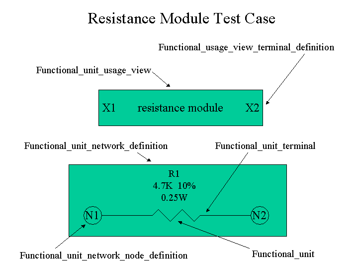

Filename:
RESISTOR.210
Author:
James F. Adams
james.f.adams@boeing.com
Title:
Resistance Module Testcase
Design Source:
N/A
Source Schema Date:
Mon Sep 4 18:51:43 EDT 2000
Validation Schema Date:
Wed Jan 23 14:34:20 EST 2001
Conformance Class:
Functional Decomposition
Recommended Practice Reference:
None.
Translator:
None.
PostProcessing:
None.
Test Purpose:
A simple fist testcase showing functional decomposition.
Applicable Rules Clauses:
functional_unit:
WR1, WR7, WR8
product_definition_formation:
UR1
product: UR1
network_node_definition:
WR1, WR2, WR3
component_functional_unit:
WR1, WR2, WR3, WR4
component_functional_terminal:
WR1, WR2, WR3
functional_unit_terminal_definition:
WR1, WR2, WR3
coordinated_representation_item:
WR7
SEDS (Step Enhancement and Descripency System):
N/A
Description:
This testcase provides a very simple example of functional decomposition.
Supporting Graphics:

Additional Powerpoint Slides.
Testing History:
None.